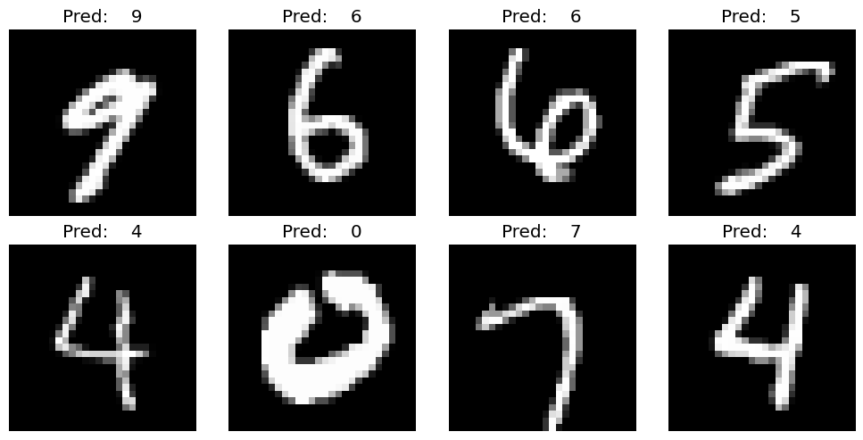
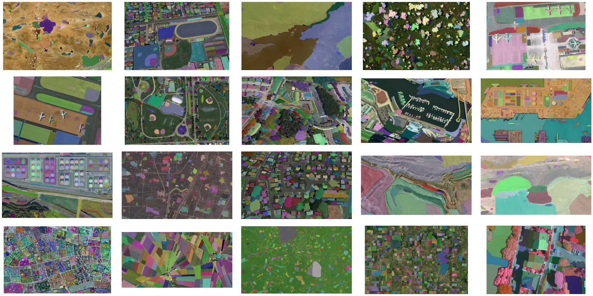
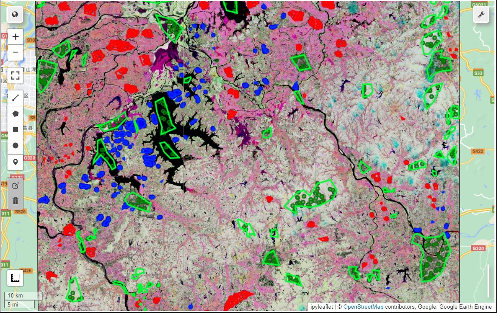
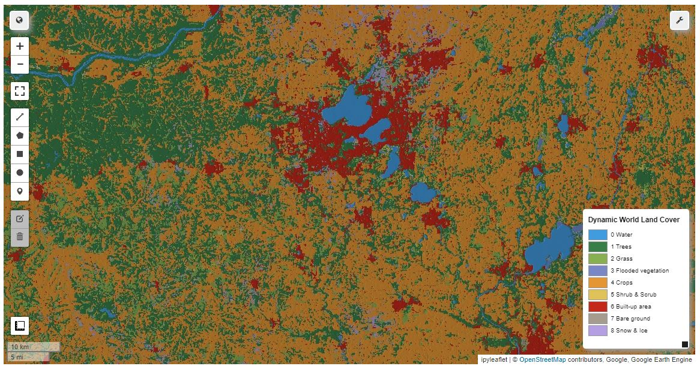
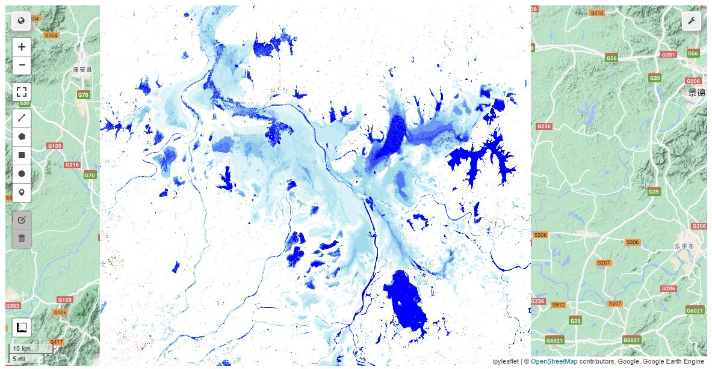

Junchuan Yu
About
Posts
Publications
Talks
Categories
APP
Art
Deep leanring
GEE
Hyperspectral
Posts
Talks
Teaching
Workshop
Posts
Order By
Default
Title
Date - Oldest
Date - Newest

用Numpy拆解神经网络
Aug 27, 2023
高光谱数据去噪及降维处理
Aug 11, 2023
光谱库读写+光谱处理及交互式采集
Aug 2, 2023
多种高光谱数据格式的读写和可视化
Jul 25, 2023
Segment-RS一个基于SAM的遥感智能交互解译工具
Apr 19, 2023

第一个通用语义分割模型？Segment Anything Model (SAM)在遥感数据上的应用测试
Apr 9, 2023
Sydney-AI 2.0: Providing Free Services to Researchers!
Apr 2, 2023
Sydney-AI, a free ChatGPT platform
Mar 11, 2023
New Bing？也许是New + Everything！
ChatGPT加持下的Net Bing，将带来一场新的技术风暴
Mar 4, 2023
Build an online translation APP based on the Transformer model
Feb 27, 2023
基于时间序列遥感的水稻类型识别-P2
Work with Remote Sensing Data in Python: Lesson 1-5-2
Feb 10, 2023

基于时间序列遥感的水稻类型识别-P1
Work with Remote Sensing Data in Python: Lesson 1-5-1
Feb 6, 2023
基于雷达数据的水体变化监测
Work with Remote Sensing Data in Python: Lesson 1-4-2
Jan 29, 2023

Dynamic world data download
Using Google Earth Engine in python
Jan 27, 2023

基于GEE的哨兵1号数据获取及水体提取
Work with Remote Sensing Data in Python: Lesson 1-4-1
Jan 18, 2023
基于遥感指数的水体提取
Work with Remote Sensing Data in Python: Lesson 1-3-2
Dec 31, 2022
哨兵2号数据获取及处理
Work with Remote Sensing Data in Python: Lesson 1-3-1
Nov 17, 2022
利用多光谱遥感数据进行地物分类
Work with Remote Sensing Data in Python: Lesson 3-3
Nov 15, 2022
AI眼中的诗意——AI绘画
Oct 8, 2022
No matching items